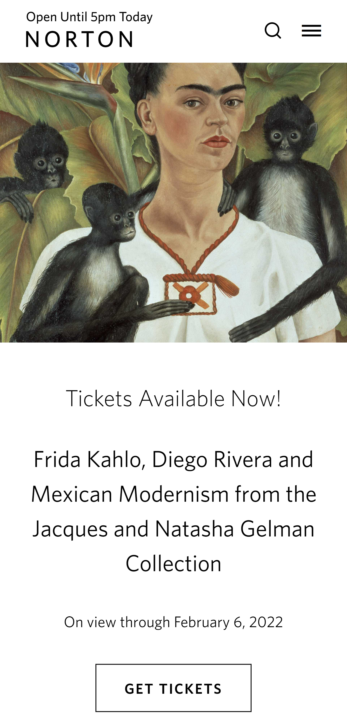

Design Principles Document
Sheyla Norton
Alignment
Ruby Falls
www.rubyfalls.com
The Ruby Falls website is well organized. The centered horizontal alignment on the text, titles, and buttons, gives visual appeal to the design. The alignment was done in a thoughful manner to inprove the readibility.
Hick's Law
Disney World
disneyworld.comThe Disney World website is easy to use for the customer. Most people visiting that website want to buy tickets or learn more about the Disney parks. The idea of Hick's Law is to help the user quickly to accomplish their goal without wasting much time. The Disney website is a great example of a Hick's Law design.
White Space and Clean Design
The Norton Museum of Art
norton.org The Norton Museum of Art has a minimalistic design. The white spaces make their website look modern. This website has colorful pictures of famous art and the clean design helps to keep those images as the focal point.